Planning Context
어떤 기획이었나
- 던전 시스템이 변경되면 기존 진입 화면, 난이도 선택, 보상 확인 방식이 새 규칙과 맞지 않을 수 있습니다.
- 반복 플레이 콘텐츠는 오늘의 플레이 가능 여부와 보상 기대치를 빠르게 보여줘야 합니다.
ProjectN · Dungeon UX
일일던전 시스템 변경에 맞춰 진입, 난이도, 보상, 상태 표시를 재정리한 콘텐츠 UX 사례입니다.
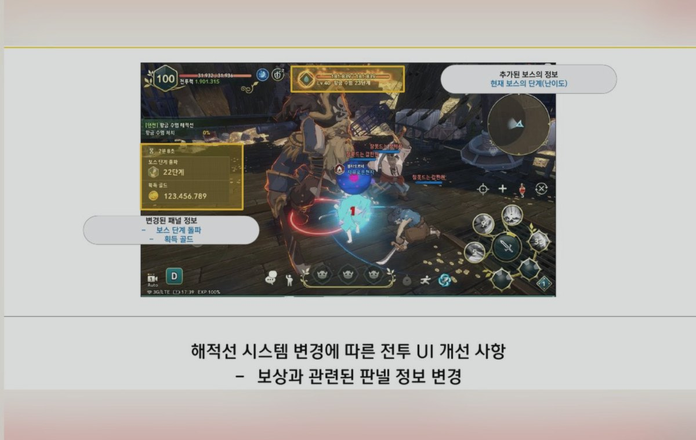
Planning Context
Process
Deliverables
Result
시스템 변경 이후에도 일일던전의 진입, 보상, 완료 상태를 일관되게 이해할 수 있도록 UX 기준을 정리했습니다.
Deliverable Captures
원본 문서는 포함하지 않고, 포트폴리오 확인용으로 일부 페이지만 이미지화했습니다. 슬라이드 마스터/상하단 영역은 흐림 처리했습니다.
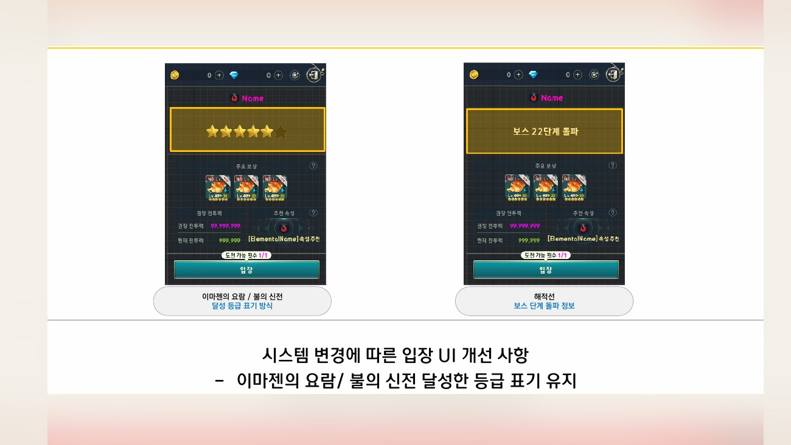
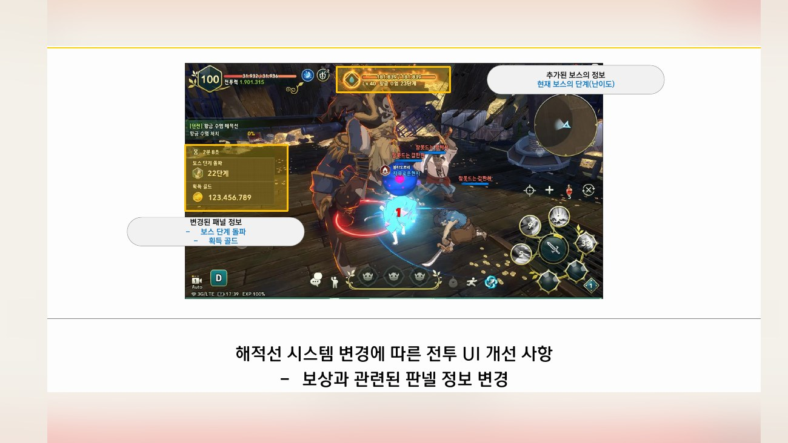
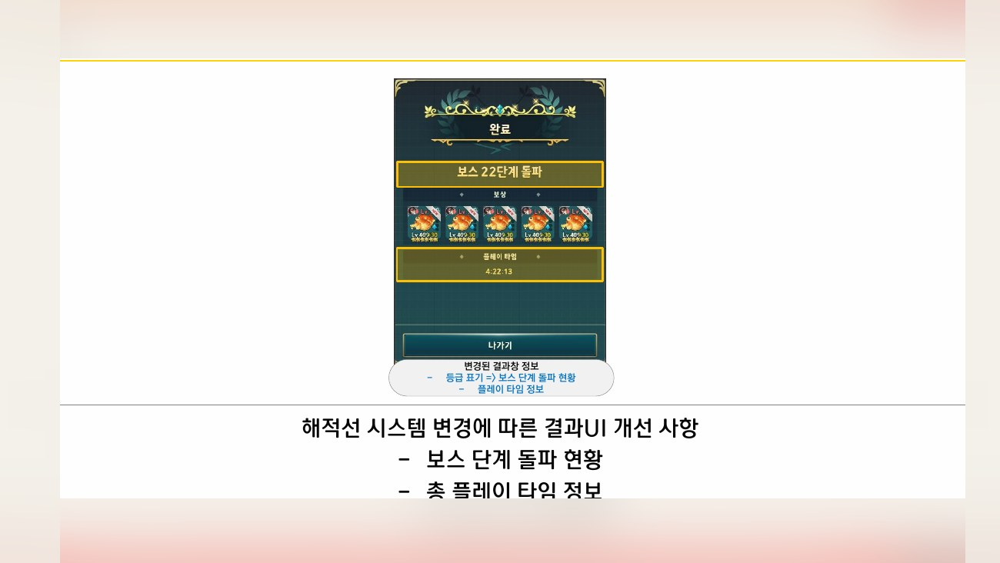
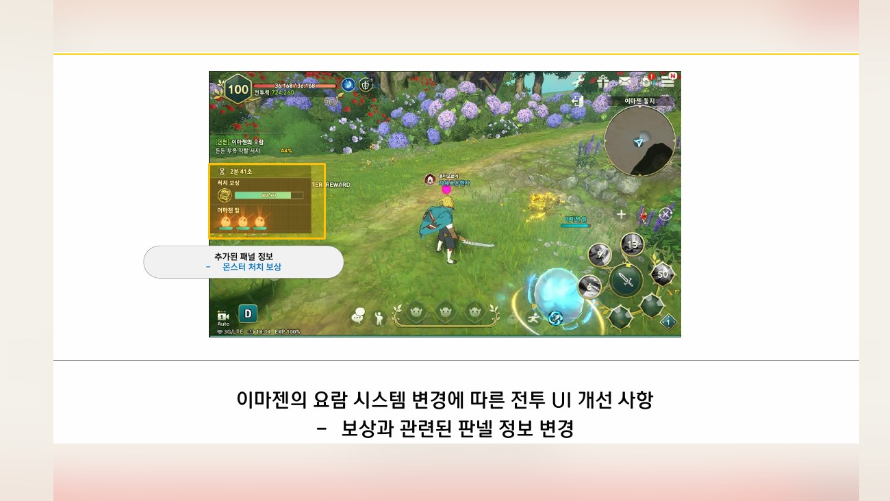
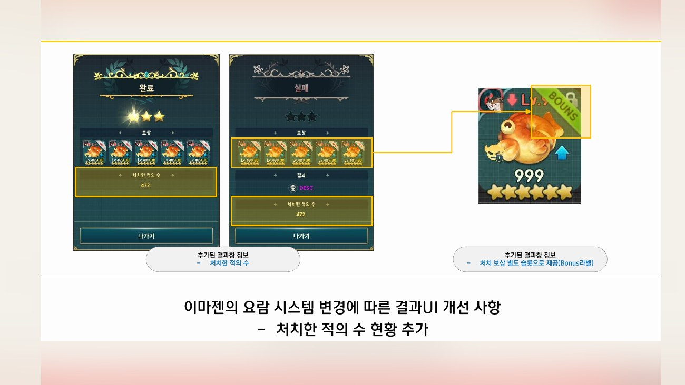
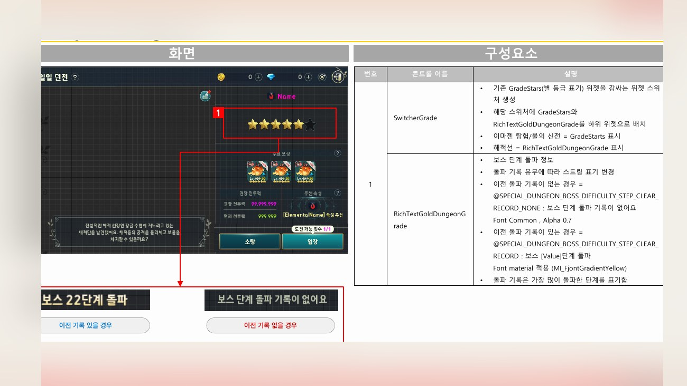
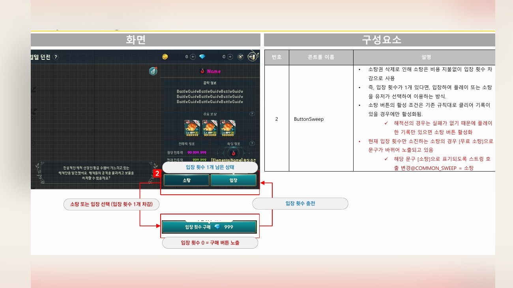
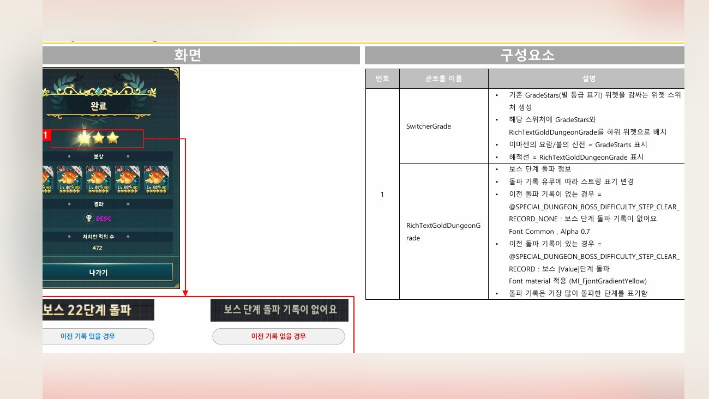
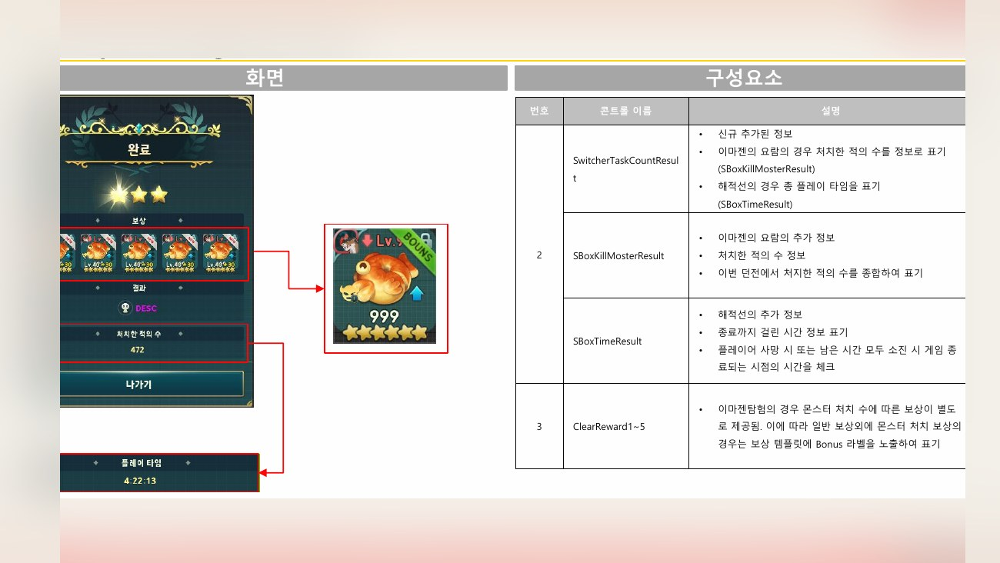
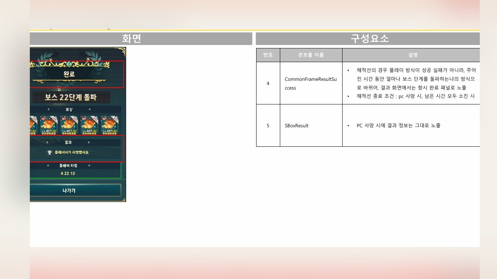
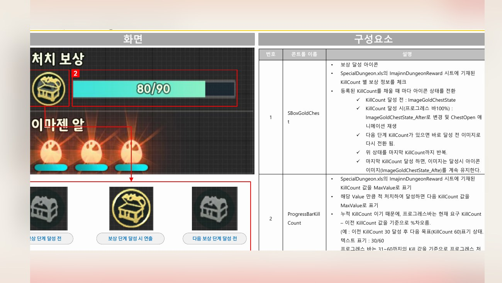
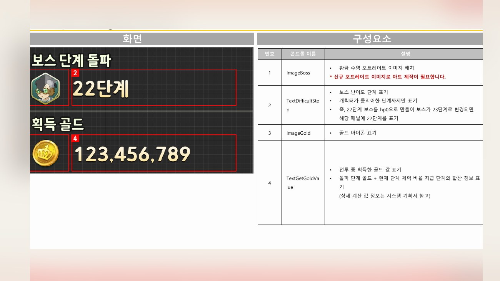
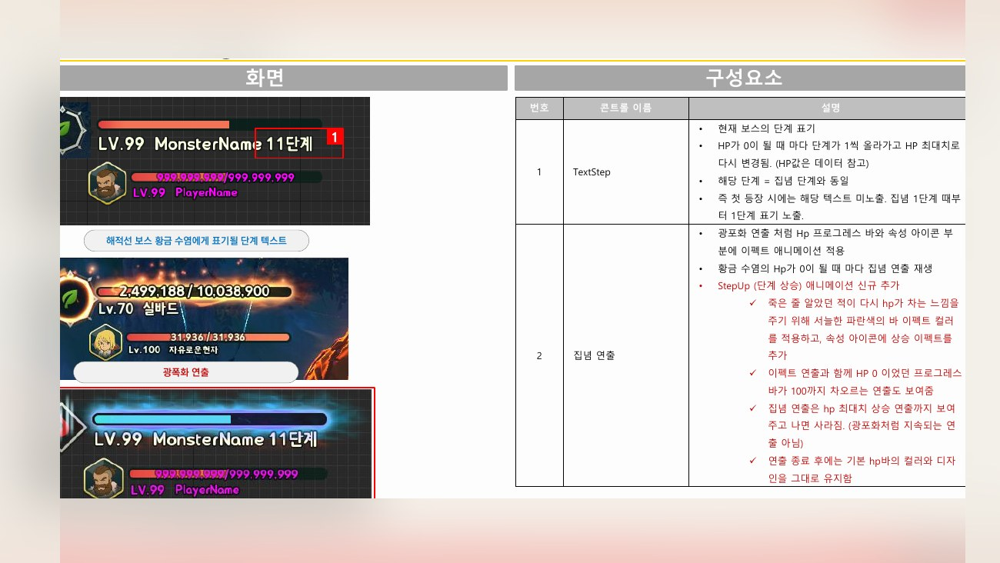